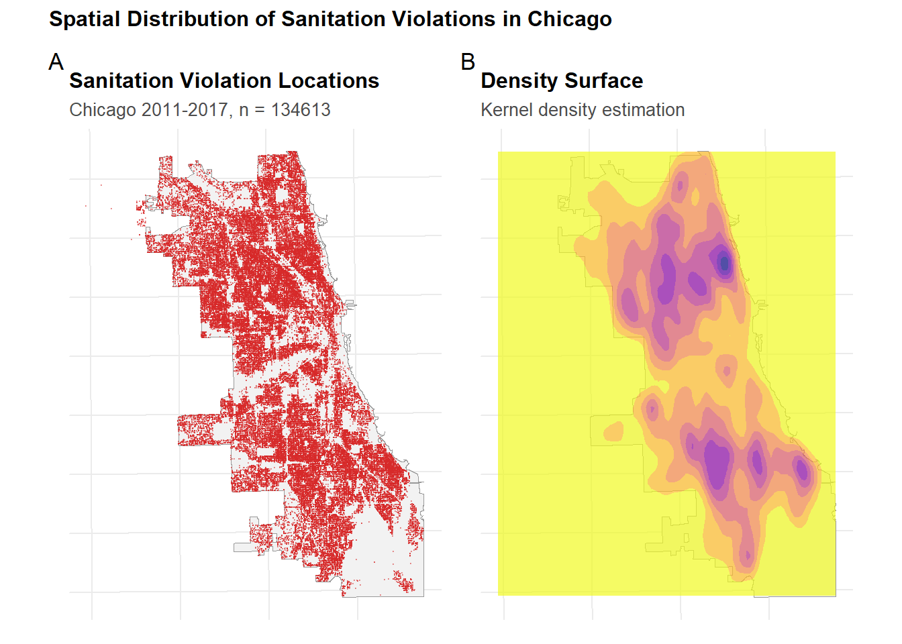
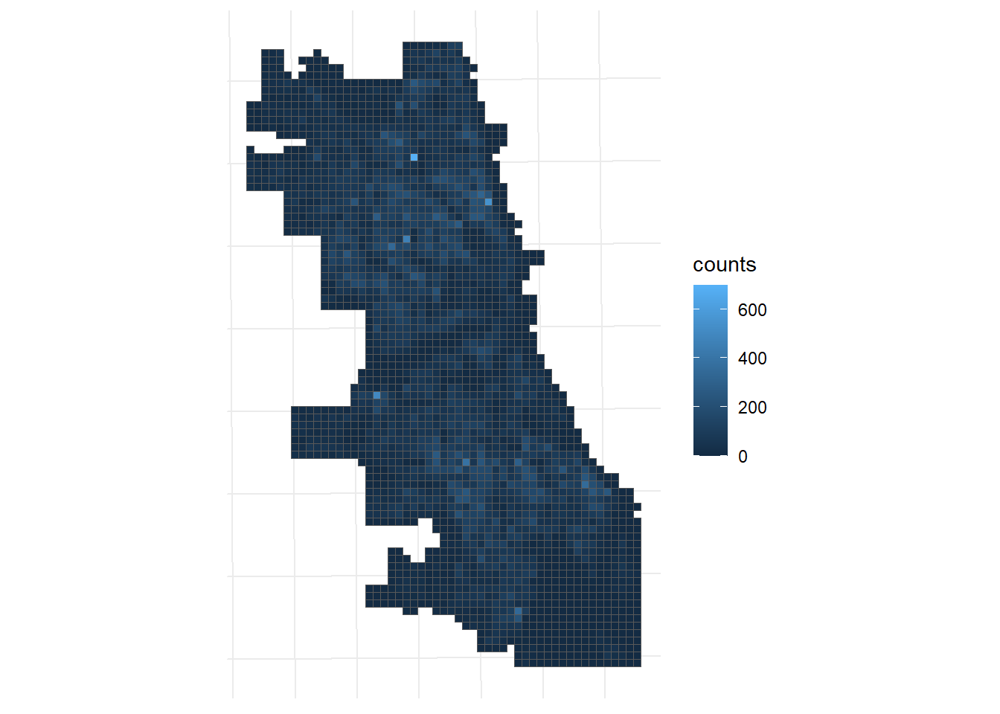
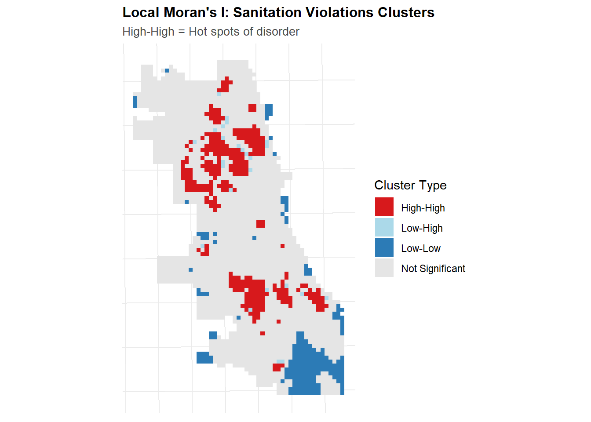

In this Lab, I am going to use Sanitation Code Violations to predict the Chicago burglaries based on 2017 burglaries data. I believe that sanitation violations tend to happened in more populated area, which also has a high likelihood of burglaries. Moreover, sanitation violations tend to happen in unwealthy neighborhood, while burglaries also tend to happen there. So there may be a spatial correlation between them.
Part 1: Data Loading & Exploration
In this section, I load and filter the data needed. Specifically, for sanitation violations, data was filtered before 2018 as our burglaries data was between 2017-2018, however, I believe the historical sanitation data (earlist is 2011) would help strengthen the characteristic of neighborhood and I decide to keep them.
Code
library(tidycensus)library(dplyr)library(tigris)library(sf)library(ggplot2)library(tidyr)library(patchwork)library(here)# Create consistent theme for visualizationstheme_crime <-function(base_size =11) {theme_minimal(base_size = base_size) +theme(plot.title =element_text(face ="bold", size = base_size +1),plot.subtitle =element_text(color ="gray30", size = base_size -1),legend.position ="right",panel.grid.minor =element_blank(),axis.text =element_blank(),axis.title =element_blank() )}# Set as defaulttheme_set(theme_crime())#load sanitition datasanitition=read.csv("C:/Users/wensh/Desktop/MUSA5080/portfolio-setup-wenshaoting6-ui/311_Service_Requests_-_Sanitation_Code_Complaints_-_Historical_20251103.csv")sanitition_clean <- sanitition %>%filter(!is.na(Longitude) &!is.na(Latitude))sanitition_sf <-st_as_sf( sanitition_clean,coords =c("Longitude", "Latitude"),crs =4326# WGS84 for lon/lat) %>%st_transform('ESRI:102271') # then match boundary CRS#Filter the sanitition before 2018 for prediction as Burglary data is before 2018sanitition_sf$Creation.Date <-as.Date(sanitition_sf$Creation.Date, format ="%m/%d/%Y")sanitition_sf <- sanitition_sf[format(sanitition_sf$Creation.Date, "%Y") <"2018", ]# Load police districts (used for spatial cross-validation)policeDistricts <-st_read("https://data.cityofchicago.org/api/geospatial/24zt-jpfn?method=export&format=GeoJSON") %>%st_transform('ESRI:102271') %>% dplyr::select(District = dist_num)# Load police beats (smaller administrative units)policeBeats <-st_read("https://data.cityofchicago.org/api/geospatial/n9it-hstw?method=export&format=GeoJSON") %>%st_transform('ESRI:102271') %>% dplyr::select(Beat = beat_num)# Load Chicago boundarychicagoBoundary <-st_read("https://raw.githubusercontent.com/urbanSpatial/Public-Policy-Analytics-Landing/master/DATA/Chapter5/chicagoBoundary.geojson") %>%st_transform('ESRI:102271')# Load from provided data file (downloaded from Chicago open data portal)burglaries <-st_read(here("data", "burglaries.shp")) %>%st_transform('ESRI:102271')# Simple point mapp1 <-ggplot() +geom_sf(data = chicagoBoundary, fill ="gray95", color ="gray60") +geom_sf(data = sanitition_sf, color ="#d62828", size =0.1, alpha =0.4) +labs(title ="Sanitation Violation Locations",subtitle =paste0("Chicago 2011-2017, n = ", nrow(sanitition_sf)) )# Density surface using modern syntaxp2 <-ggplot() +geom_sf(data = chicagoBoundary, fill ="gray95", color ="gray60") +geom_density_2d_filled(data =data.frame(st_coordinates(sanitition_sf)),aes(X, Y),alpha =0.7,bins =8 ) +scale_fill_viridis_d(option ="plasma",direction =-1,guide ="none"# Modern ggplot2 syntax (not guide = FALSE) ) +labs(title ="Density Surface",subtitle ="Kernel density estimation" )# Combine plots using patchwork (modern approach)p1 + p2 +plot_annotation(title ="Spatial Distribution of Sanitation Violations in Chicago",tag_levels ='A' )

Based on the maps above, the north east area has the highest density, while north-west, south east and south west have a high density as well. The middle part and very suburb have a relatively low density.
Part 2: Fishnet Grid Creation
In this section, a 500 meter resolution sized grid was created over Chicago area, the sanitation and burglaries counts are summarized within each cell. By creating this, we manage to divide Chicago into many small sections (smooth it) and analyze based on those small sections.
Code
#create a 500m fishnet gridcell_size=500fishnet <-st_make_grid( chicagoBoundary,cellsize = cell_size,square =TRUE,what ="polygons") %>%st_sf() %>%mutate(uniqueID =row_number())fishnet <- fishnet[chicagoBoundary, ]# Spatial join: which cell contains each burglary?burglaries_fishnet <-st_join(burglaries, fishnet, join = st_within) %>%st_drop_geometry() %>%group_by(uniqueID) %>%summarize(countBurglaries =n())# Join back to fishnet (cells with 0 burglaries will be NA)fishnet <- fishnet %>%left_join(burglaries_fishnet, by ="uniqueID") %>%mutate(countBurglaries =replace_na(countBurglaries, 0))# Spatial join: which cell contains each sanitation violation?sanitition_counts <-st_join(sanitition_sf, fishnet) %>%st_drop_geometry() %>%group_by(uniqueID) %>%summarize(counts =n())# Join back to fishnet fishnet <- fishnet %>%left_join(sanitition_counts, by ="uniqueID") %>%mutate(counts =replace_na(counts, 0))#create the graphggplot()+geom_sf(data=fishnet,aes(fill=counts))+theme_crime()

Similar to the density map, the spatial distribution of sanitation counts show a simialr pattern. The north still has the highest count. The density on the south is high as well and that in the middle is low. The count in suburb is low.
Part 3: Spatial Features
In this section, we address the potential spatial auto correlation by calculating sanitation violation’s most nearest neighbor and its closest distance to hotpots. The nearest neighbor was used to address the potential spatial influence of the nearest neighborhood; the distance to hotspot was used to address how the cluster of sanitation violations influence the sanitation violation in a sinngle cell. In the results, there are 215 hotpots of sanitation violations in total in Chicago
Code
library(FNN)library(spdep)#k-nearest neighbornn_dist<-get.knnx(data =st_coordinates(sanitition_sf), query =st_coordinates(st_centroid(fishnet)), k =1)fishnet$sanitition_nn <- nn_dist$nn.dist[, 1]# Function to calculate Local Moran's Icalculate_local_morans <-function(data, variable, k =5) {# Create spatial weights coords <-st_coordinates(st_centroid(data)) neighbors <-knn2nb(knearneigh(coords, k = k)) weights <-nb2listw(neighbors, style ="W", zero.policy =TRUE)# Calculate Local Moran's I local_moran <-localmoran(data[[variable]], weights)# Classify clusters mean_val <-mean(data[[variable]], na.rm =TRUE) data %>%mutate(local_i = local_moran[, 1],p_value = local_moran[, 5],is_significant = p_value <0.05,moran_class =case_when(!is_significant ~"Not Significant", local_i >0& .data[[variable]] > mean_val ~"High-High", local_i >0& .data[[variable]] <= mean_val ~"Low-Low", local_i <0& .data[[variable]] > mean_val ~"High-Low", local_i <0& .data[[variable]] <= mean_val ~"Low-High",TRUE~"Not Significant" ) )}# Apply to abandoned carsfishnet <-calculate_local_morans(fishnet, "counts", k =5)# Get centroids of "High-High" cells (hot spots)hotspots <- fishnet %>%filter(moran_class =="High-High") %>%st_centroid()# Calculate distance from each cell to nearest hot spotif (nrow(hotspots) >0) { fishnet <- fishnet %>%mutate(dist_to_hotspot =as.numeric(st_distance(st_centroid(fishnet), hotspots %>%st_union()) ) )cat("✓ Calculated distance to abandoned car hot spots\n")cat(" - Number of hot spot cells:", nrow(hotspots), "\n")} else { fishnet <- fishnet %>%mutate(dist_to_hotspot =0)cat("⚠ No significant hot spots found\n")}
✓ Calculated distance to abandoned car hot spots
- Number of hot spot cells: 316
Code
# Visualize hot spotsggplot() +geom_sf(data = fishnet, aes(fill = moran_class), color =NA ) +scale_fill_manual(values =c("High-High"="#d7191c","High-Low"="#fdae61","Low-High"="#abd9e9","Low-Low"="#2c7bb6","Not Significant"="gray90" ),name ="Cluster Type" ) +labs(title ="Local Moran's I: Sanitation Violations Clusters",subtitle ="High-High = Hot spots of disorder" ) +theme_crime()

Based on the map above, both the north and middle of Chicago has a huge high-high cluster of sanitation violations, while the far south of the city, which is also the suburban area, has a low-low cluster of sanitation violations.
Part 4: Count Regression Models
In this section, I first ran the poisson regression, then I check the dispersion to see if the assumption of poisson regression still holds. The results suggest I to use negative binomial regression in the end. The AIC for negative binomial is also smaller than poisson, suggesting it a better model
Code
# Join district information to fishnetfishnet <-st_join( fishnet, policeDistricts,join = st_within,left =TRUE) %>%filter(!is.na(District)) #clean and make the final modelfishnet_model <- fishnet %>%st_drop_geometry() %>% dplyr::select( uniqueID, District, countBurglaries, counts, sanitition_nn, dist_to_hotspot ) %>%na.omit() #poisson regressionr1=glm(countBurglaries~counts+sanitition_nn+dist_to_hotspot,data = fishnet_model,family =poisson(link ="log"))
library(MASS)#as there is overdispersion, I use negative binomial model insteadr2=glm.nb(countBurglaries~counts+sanitition_nn+dist_to_hotspot,data = fishnet_model)# Compare AIC (lower is better)cat("\nModel Comparison:\n")
The lower AIC for negative binomial regression suggest it is a better model
Part 5: Spatial Cross-Validation
In this section, a Leave-One-Group-Out cross-validation was performed to test the accuracy of the model performance. The results shows a mean MAE of 2.45 and a mean RMSE of 3.41
Code
# Get unique districtsdistricts <-unique(fishnet_model$District)cv_results <-tibble()cat("Running LOGO Cross-Validation...\n")
Running LOGO Cross-Validation...
Code
for (i inseq_along(districts)) { test_district <- districts[i]# Split data train_data <- fishnet_model %>%filter(District != test_district) test_data <- fishnet_model %>%filter(District == test_district)# Fit model on training data model_cv <-glm.nb( countBurglaries ~ counts+sanitition_nn+dist_to_hotspot,data = train_data )# Predict on test data test_data <- test_data %>%mutate(prediction =predict(model_cv, test_data, type ="response") )# Calculate metrics mae <-mean(abs(test_data$countBurglaries - test_data$prediction)) rmse <-sqrt(mean((test_data$countBurglaries - test_data$prediction)^2))# Store results cv_results <-bind_rows( cv_results,tibble(fold = i,test_district = test_district,n_test =nrow(test_data),mae = mae,rmse = rmse ) )}# Overall resultscat("Mean MAE:", round(mean(cv_results$mae), 2), "\n")
# Show resultslibrary(kableExtra)cv_results$test_district=as.numeric(cv_results$test_district)cv_results %>%arrange(desc(mae)) %>%kable(digits =2,caption ="LOGO CV Results by District",col.names =c("Fold Number","District","Cell Number","MAE","RMSE") ) %>%kable_styling(bootstrap_options =c("striped", "hover"),full_width =FALSE,position ="center")
LOGO CV Results by District
Fold Number
District
Cell Number
MAE
RMSE
7
3
43
4.73
6.76
15
18
30
3.92
5.33
17
14
46
3.45
4.34
18
19
63
3.17
3.99
22
24
41
2.87
3.57
14
11
43
2.83
3.35
20
17
82
2.76
6.19
4
6
63
2.76
3.82
12
12
73
2.69
3.79
6
7
52
2.49
3.46
16
25
85
2.45
3.40
8
2
56
2.31
3.28
11
1
28
2.12
2.59
21
20
30
2.10
2.59
5
8
197
2.08
3.32
13
15
32
2.02
2.35
1
5
98
1.90
2.99
10
10
63
1.81
2.45
3
22
112
1.80
2.23
9
9
107
1.74
2.38
19
16
129
1.24
1.63
2
4
235
1.12
2.48
Part 6: Model Evaluation
In this section, I evaluated the negative binomial model by comparing the predicted results with Kernel density estimation. Moreover, error maps were made to evaluate where model performs well/poorly. Lastly, a final table of model’s coefficient, standard error and z value was presented to discuss the relationship between sanititation violations and burglaries
Code
library(spatstat)library(terra)# Convert burglaries to ppp (point pattern) format for spatstatburglaries_ppp <-as.ppp(st_coordinates(burglaries),W =as.owin(st_bbox(chicagoBoundary)))# Calculate KDE with 1km bandwidthkde_burglaries <-density.ppp( burglaries_ppp,sigma =1000, # 1km bandwidthedge =TRUE# Edge correction)# Convert to terra raster (modern approach, not raster::raster)kde_raster <-rast(kde_burglaries)# Extract KDE values to fishnet cellsfishnet <- fishnet %>%mutate(kde_value = terra::extract( kde_raster,vect(fishnet),fun = mean,na.rm =TRUE )[, 2] # Extract just the values column )
Code
# Fit final model on all datafinal_model <-glm.nb( countBurglaries ~ counts + sanitition_nn + dist_to_hotspot,data = fishnet_model)# Add predictions back to fishnetfishnet <- fishnet %>%mutate(prediction_nb =predict(final_model, fishnet_model, type ="response")[match(uniqueID, fishnet_model$uniqueID)] )# Also add KDE predictions (normalize to same scale as counts)kde_sum <-sum(fishnet$kde_value, na.rm =TRUE)count_sum <-sum(fishnet$countBurglaries, na.rm =TRUE)fishnet <- fishnet %>%mutate(prediction_kde = (kde_value / kde_sum) * count_sum )
Maps above show the comparison between actual burglaries and model predictions. The model over predicts north-east area, area in the north west seems to be under predicted. Both south east and south west seems to be under predicted. For KDE model, the accuracy seems to be improved, while the results look a little bit vague, highly because KDE smooth the result.
Similar to the maps, both MAE and RMSE for negative binomial model is fewer than those in KDE, suggesting KDE may be a better and simpler model to predict
Maps above show the spatial distribution of the error. It seems that the north, especially the north east, tends to under predict, while the south east and south west tend to be over predicted. The middle tends to be underpredicted. In terms of absolute value, both north east and south east have a higher absolue value of error than the west.
Final Negative Binomial Model Coefficients (Exponentiated)
Variable
Rate Ratio
Std. Error
Z
P-Value
(Intercept)
5.314
0.061
27.182
0
counts
1.004
0.000
10.125
0
sanitition_nn
0.993
0.000
-15.786
0
dist_to_hotspot
1.000
0.000
-11.362
0
Note:
Rate ratios > 1 indicate positive association with burglary counts.
The last table shows the relationship between sanitation violations and burglary counts. It seems that all the coefficient is about 1, implying all the predictors seem do not have association with the outcome. The assumption made in the introduction may be wrong, and it also explains why KDE model performed better than this negative binomial model.